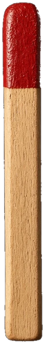
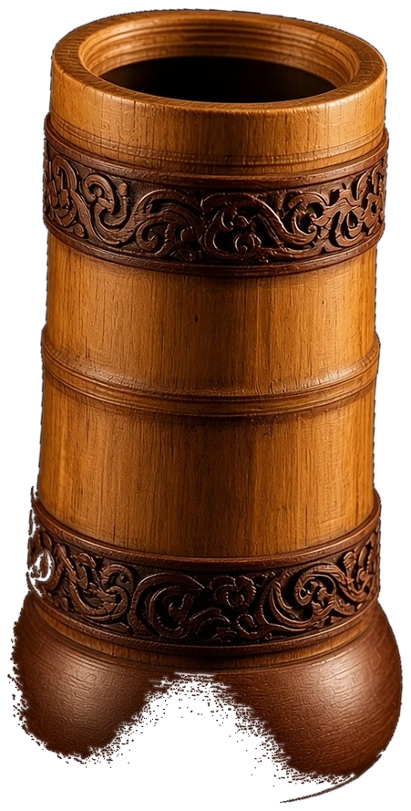

師門介紹
董事長 LEO易凡
十三年全職交易
三次牛熊
不帶單不喊單不承諾報酬
「先學會在市場活下來」

洞天三境
擇一路而行
內門 · 玉符
LEO 史塔 仙府 · 內門大殿
練氣
左右滑動 · 點選牌位探訪
LEO 史塔 仙府 · 外門
遊山左右滑動 · 點選牌位探訪

董事長 LEO易凡
十三年全職交易
三次牛熊
不帶單不喊單不承諾報酬
「先學會在市場活下來」
A／B 學習專案
內容待掌門補充
三卷心法 · 循序修習
經文由掌門親訂。以下章目已備，正文待掌門放置。
入門須知／常見問題
模型實盤回顧
本欄只記觸發的時間點與結果，不公開點位。以下為欄位框架，內容待掌門放置。
本頁整理僅供學習觀察，非投資建議，亦不保證任何結果。
擋人財路
「擋人財路」是掌門 Leo 對外的防詐系列，把市場裡常見的話術攤開來看。先學會辨識，再談其他。
以下幾種說法，建議多停一步。這是護法的功課，不是要嚇你，是要你把眼睛擦亮。
有人要你跟著他的指令進出，把判斷交給別人。要在市場活下來，判斷仍須自己做；把倉位交給陌生人，風險也就交給對方。
市場沒有人能保證結果。凡把「穩賺、保本、穩了」掛在嘴邊的，多半是要你先把錢送出去。
以老師、顧問之名，邀你進群看盤，再轉私訊下單或繳費。陌生加群、又急著要你匯款的，請先查證、先停手。
盜用掌門或其他人的姓名、照片、帳號來取信。聯繫請走你本來就認識的管道，不要從陌生連結或臨時帳號進去。
已經「賺錢」，卻說要先繳稅、繳保證金才能出金——這是常見套路。正路不會用出金來要你再付錢。
不帶單、不喊單、不承諾報酬，是師門自己的規矩；也請你用同一把尺，去量外面的人。
火候 · 風險控管
煉丹講火候。火太旺，丹焦；火太弱，丹生。交易裡的火候，就是風險怎麼控。
以上為觀念整理，非投資建議，亦不保證任何結果。
三市每日戰報
天機閣彙整師門公開的每日戰報，供來人閱覽。戰報為盤面觀察整理，非投資建議。
各戰報為固定網址，每日覆蓋更新。內容僅供觀察，非投資建議。
門徒成果
此牆留給掌門確認過的成果。位置已備，內容待掌門提供，不另行添寫。
位置一
位置二
位置三
位置四
外門引路
若你願意再往前走一步，可私訊「成長」，領取交易觀察模型。
本頁內容皆非投資建議，不構成任何買賣建議，亦不保證結果。
門徒專屬引薦計劃
僅限內部門徒 · 破例開放 · 共享體系紅利
交易是孤獨的修行，但長久生存，離不開同頻的夥伴。
值此生辰之際，我將這份「引薦權」作為專屬回饋，交付給每一位追隨至今的門徒。
這不是一場普通的推廣活動，而是賦予你的身份殊榮——你將有資格，將認可的同路人帶入我的交易體系，共享市場紅利，共修長存之道。
凡成功引薦夥伴加入 A / B 任一學習專案，你將解鎖：
你推薦的同路人，將獲得完整體系服務：
想引薦同路人加入
請直接私訊 LEO掌門
「 機會從來只留給有準備的人，
包括帶著身邊人一起抓住機會的人。」
市場長路，願你我與同路人，行穩致遠。
內門日課 · 三件即可
今日功課已了。明日再來：可再求一支新籤，並續燃蓮燈。
一日一支 · 收入籤譜


按住拖曳搖筒，或輕點自動搖
今日之籤
連續閉關 0 日
點起今日的蓮燈，把盤後的心安住。
靈氣充盈
凡人看過山門，外門記上一筆。護法與火候既已入眼，可去尋接引使者，問後續的路。
凡人 → 外門弟子